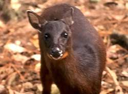

Venado Matacan
- Nombre comun: Venado matacan
- Nombre cientifico: Mazama bricenii
- Origen: Peninsula de Baja California. Tambien se localiza en el sur de Canada, Estados Unidos de America y desde Centroamerica hasta Bolivia.
- Cantidad:13
- Caracteristicas: La longitud cabeza-cuerpo varia entre 85 y 90 cm, la altura en el hombro entre 45 y 50 cm, y el peso puede variar de 8 a 13 kg. Solo el macho posee cornamenta, que son de una sola punta y de hasta 6 cm de largo. Su coloracion dorsal rojiza oscura se hace más palida hacia los costados y vientre, y se vuelve casi negra en las patas y la cabeza. Su garganta es anaranjada. Tiene manchas blancas en el labio superior y en la punta de la mandibula. La cola es blanca por debajo.
- Alimentacion: Lo que comen son una gran variedad de plantas, parte fundamental de su dieta ingiere tallos, raices frutos de las plantas que se encuentran en cosechas.
- Reproduccion: se efectua en cualquier epoca del año y es precedida por peleas entre los machos; estas no son más que una medicion de fuerzas, casi nunca resultan heridos, pero solo el ganador tiene derecho de aparearse. La gestacion dura siete meses, la hembra da a luz un maximo de dos crias.
- Estado de conservacion: Se encuentra en amenaza de peligro de extincion.